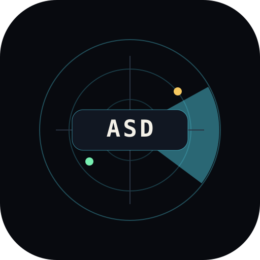
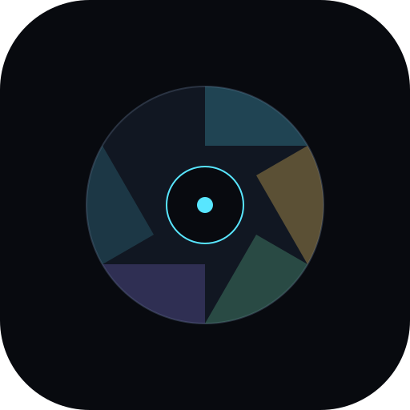
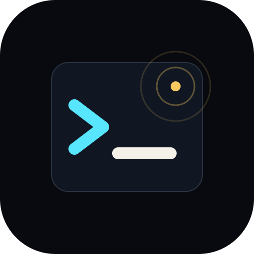
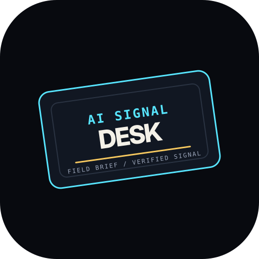
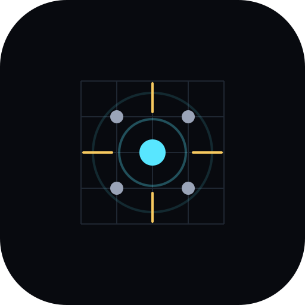
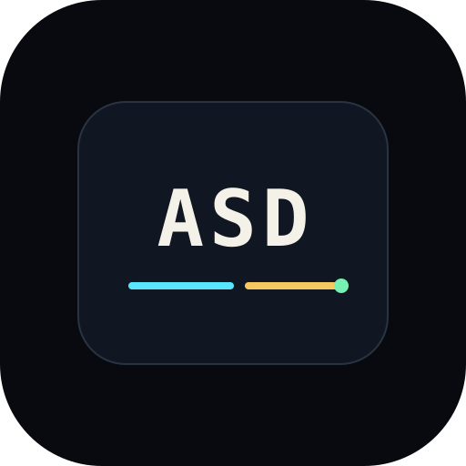

Option ARadar monogram
Most direct fit: ASD inside a scanner. Strong for favicon and product identity.
AI Signal Desk
 AI Signal Desk
Open selected SVG
AI Signal Desk
Open selected SVG
Logo exploration / v0.1
The goal is a logo that works as a favicon, publication mark, and product lockup without falling into generic AI symbolism.

Option AMost direct fit: ASD inside a scanner. Strong for favicon and product identity.

Option BMost premium and abstract. Good if the brand should mature beyond the ASD letters.

Option CMost developer/operator coded. Strong if the product leans into tools and workflows.

Option DMost editorial. Useful for issue covers, but weaker as a tiny app icon.

Option EMost ownable metaphor: many dots, one useful signal. Clear at small sizes.

Option FSimplest and most flexible. Less distinctive, but easiest to use everywhere.
Selected direction
The selected mark is simple, flexible, and readable as a favicon. It keeps the operational ASD monogram while using the cyan/amber/green signal underline as the distinct brand cue.
The dark container survives on light surfaces, so the mark can work in social previews, docs, embeds, and favicons.